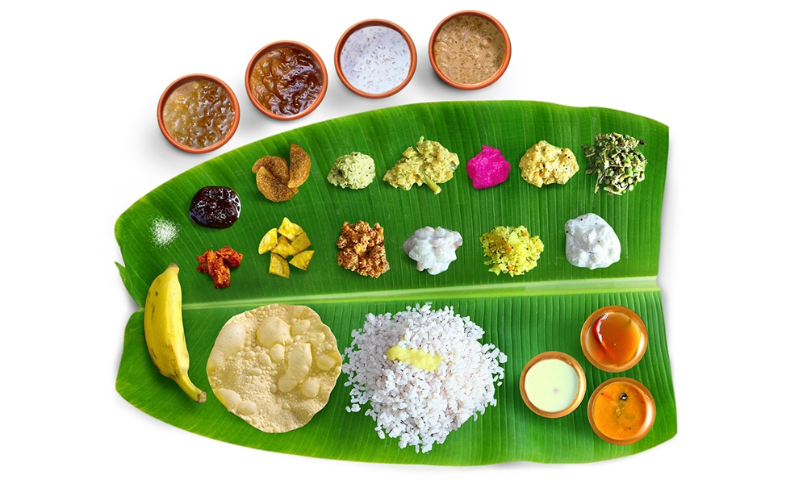
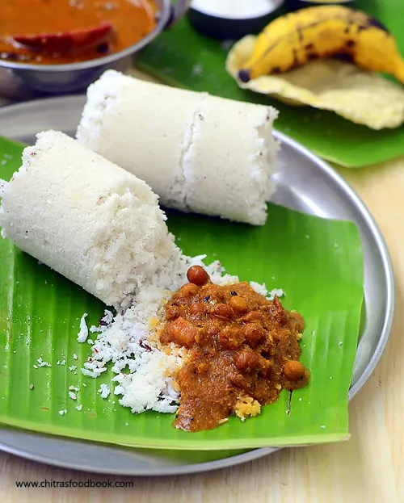
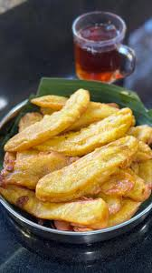

Kerala cuisine, known as the "Land of Spices," is a vibrant culinary landscape defined by its liberal use of coconut, rice, tamarind, and aromatic spices like black pepper, cardamom, and cloves. The food is deeply rooted in tradition and geographical bounty, featuring a massive array of seafood along the coast and fresh vegetables inland, often cooked in coconut oil. A quintessential Kerala experience is the Sadhya, a elaborate vegetarian feast served on a banana leaf during festivals like Onam, which includes staples such as Avial (mixed vegetables with coconut), Sambar, Olan, and Payasam. Breakfast favorites are mostly steamed and include Puttu (steamed rice and coconut cake) paired with Kadala Curry (black chickpeas) or fluffy Appam with stew. Non-vegetarian delicacies, particularly popular among Syrian Christian and Malabar communities, feature rich flavors, such as Karimeen Pollichathu.

Sadya is a feast encompassing the length and breadth of vegetarian cuisine. Its spread can go up to 28 dishes at a time. This traditional vegetarian feast of Kerala is among the most favourite delicacies of all who visit our shores.Traditionally, Sadya is served on a plantain leaf, with the tapering side of the leaf pointing to the left of the guest. It consists of par boiled red rice, side dishes, savouries, pickles and desserts, all served at different times of the meal. Rice is usually placed on the lower side of the leaf.First served item after rice is Parippu, which is a liquid curry made from small gram and ghee. It is followed by the South Indian household favourite, Sambar. This vegetable stew can be made from any assortment of vegetables available. They are then boiled in gravy of crushed lentils, onions, chillies, coriander and turmeric with a pinch of asafoetida. Side dishes are equally important. Avial, a combination of vegetables, coconut paste and green chillies, is extremely famous. Fresh coconut oil and raw curry leaves are immediately added after the dish is prepared to add to the flavour of the dish. Thoran is another important side dish. It usually contains minced string beans, cabbage, radish or grams, mixed with grated coconut along with a dash of red chillies and turmeric powder. Olan is a dish which consists mainly of pumpkin and red grams cooked in thin gravy of coconut milk.Major savouries of a Sadya include Upperi (deep fried banana chips), Pappadams (fried wafer of black gram flour), Ginger Pickle and Kichadi (sliced cucumber/ladyfinger in curd, seasoned with mustard, red chillies and curry leaves in coconut oil). They are served along with mango and lime pickle.Payasams, Kerala's beloved dessert, are served next. There are different variety of Payasams like Pal Payasam, Palada Pradhaman and Kadalaparippu Pradhaman. A payasam is basically a pudding of sweet brown molasses or milk, coconut milk and spices, garnished with cashew nuts and raisins. One normally has a ripe yellow plantain, Pazham, along with it.

Kadala curry is also known as kadala kari or kondakadalai curry which is one of the most popular dish in and around Kerala & other parts of South India. Traditionally it is made with black chana which is also known as kala chana or karuppu kondakadalai. It is known for its health benefits and it has more nutrition than white chickpeas or kabuli chana which is used in the world famous chana masala.Puttu and Kadala Curry is a staple, iconic Kerala breakfast pairing steamed rice cake (puttu) with a rich, spiced black chickpea curry (kadala). Puttu is made from moistened rice flour and grated coconut steamed in a cylindrical vessel. The curry uses roasted coconut paste, curry leaves, and spices, offering a high-fiber, protein-packed, and comforting vegetarian meal.Puttu and Kadala Curry is the quintessential, iconic breakfast combination from Kerala. Puttu consists of steamed cylindrical cakes made from ground rice flour layered with freshly grated coconut.

Pazham pori recipe with step by step pics. Pazham pori also known as ethakka appam is a popular snack from Kerala made with ripe bananas. Banana slices are coated in an all-purpose flour batter and then deep fried. A tasty vegan banana fritters recipe that makes for a good tea time snack paired with a cup of hot chai or coffee.